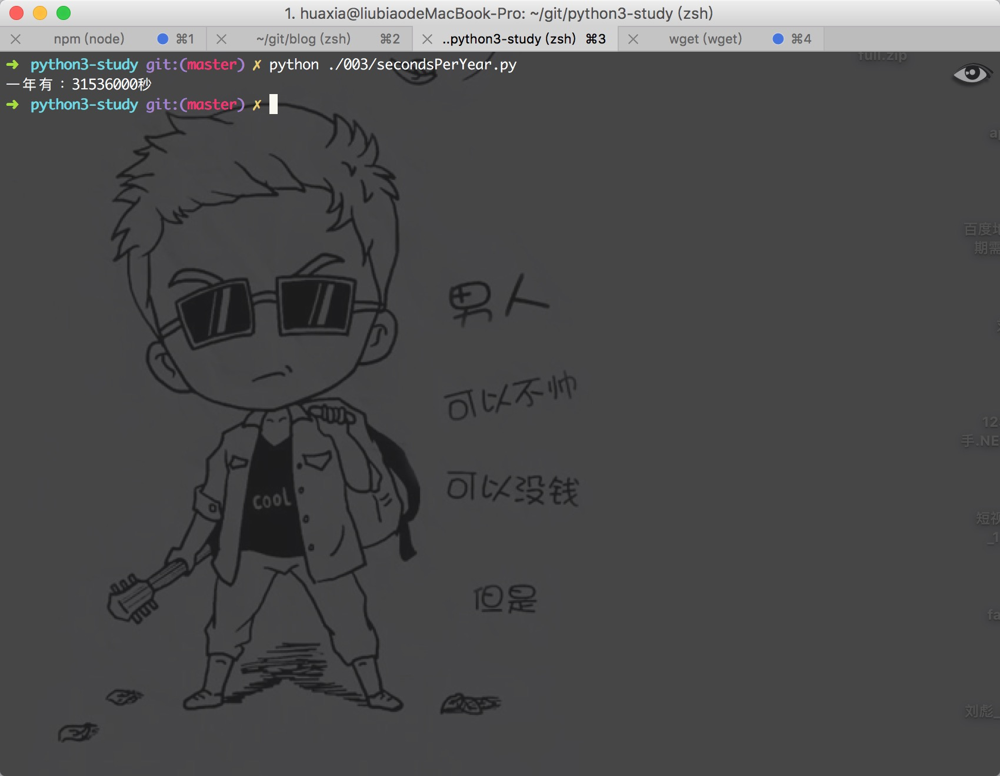

学习Python 003
测试题：
0.以下哪个变量的命名不正确？为什么？
(A) MM_520 (B) _MM520_ (C) 520_MM (D) _520_MM
(c)命名錯誤，Python中只能以字母、下劃線開頭命名，不能以數字開頭命名變量
1.在不上机的情况下，以下代码你能猜到屏幕会打印什么内容吗？
>>>myteacher = 'huaxia'
>>>yourteacher = myteacher
>>>yourteacher = 'liubiao'
>>>print(myteacher)
會打印出：huaxia
2.在不上机的情况下，以下代码你能猜到屏幕会打印什么内容吗？
>>> myteacher = 'huaxia'
>>> yourteacher = myteacher
>>> myteacher = 'liubiao'
>>> print(yourteacher)
會打印出：huaxia
3.在不上机的情况下，以下代码你能猜到屏幕会打印什么内容吗？
>>>first = 520
>>>second = '520'
>>>first = second
>>>print(first)
會打印出：'520'
4.除了使用反斜杠（\）进行字符转义，还有什么方法可以打印：Let's go! 这个字符串？
"Let's go!"
5.如果非要在原始字符串结尾输入反斜杠，可以如何灵活处理？ （ Python中的原始字符串以r开头，使用原始字符串可以避免字符串中转义字符带来的问题。） 打印：
str = r'C:\Program Files\now\Good''\\'這樣就會在原始字符串的結尾加上\6.在例子5中起了个 str 名字的变量，但事实上我们发现，str 的颜色跟普通变量貌似不同？没错，str() 和 print() 都是内置函数，但 Python 貌似不介意我们对内置函数进行赋值操作，所以这点我们以后就要注意啦，否则可能会出现以下的 BUG：
動動手
- 001的动动手的题目吗？这一次要求使用变量，计算一年有多少秒？
我們來使用變量：
# @file: 變量計算一年多少秒
# @author: 花夏(liubiao@itosx.com)
# @version: V0.0.1
# @date: 2016-12-31 16:28:36
daysPerYear = 365
hoursPerDay = 24
minutesPerHour = 60
secondsPerMinutes = 60
result = daysPerYear * hoursPerDay * minutesPerHour * secondsPerMinutes
result = str(result)
print('一年有：' + result + '秒')
# 輸出：一年有：31536000秒


微信打賞

支付寶打賞